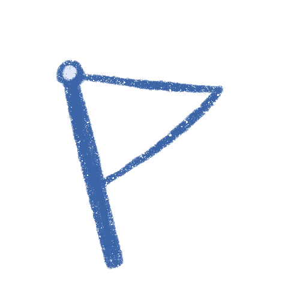

View Resume/CV


Work Experiences
Product Designer, 05/2019 – Present
NowPow, Chicago, IL
- Sole user experience researcher and designer supporting 5 product teams.
- Lead all user research through interview, usability testing, and participatory design, ranging from 10 to 15 sessions each month.
- Create design system to increase hand-off efficiency and design consistency; system includes a UI kit built with Adobe XD.
- Collaborate with product managers, developers, QA, and customer success to validate designs, prioritize features, and determine products’ future directions.
UX Designer Intern, 06/2018 – 08/2018, 01/2019 – 04/2019
TechSmith Corporation, Okemos, MI
- Primary UX designer in the early stage of product cycle, defined project scope and user groups through various research methods, such as comparative analysis.
- Created designs for desktop application – implemented in the 2019 release update.
- Participated in user interviews and synthesize results to support design decisions.
Research and Teaching
Research Assistant, 10/2020 – Present
PITCH Lab/CBITs, Northwestern University, Chicago, IL
- Working with postdoc to identify and design solutions for women managing postpartum depression and their care managers.
Research Assistant, 10/2018 – 05/2019
Empathetic Research Lab, University of Michigan, Ann Arbor, MI
- Conducted literature review for independent study on child-centered approach in behavioral interventions for children with special needs.
- Led a team of 4 to design protocol, conduct interviews, and analyze results.
- Presented in a poster session at University of Michigan’s Exposition, with over 200 attendees from the university and in the industry.
Graduate Student Instructor, 09/2018 – 05/2019
University of Michigan, Ann Arbor, MI
- Led a team of 4 graduate student instructors to create testing materials and manage testing logistics for 300 undergraduate students.
- Taught over 75+ students on Introduction to Cognitive Psychology through 3 discussion sections for 2 semesters.
- Created and executed learning activities based on students’ learning styles.
Research Assistant, 02/2015 – 06/2017
VECTR Lab, San Jose State University, San Jose, CA
- Collected data from over 50 participants through go-no-go tasks, flanker test, and care sorting for lab studies on cyber security and human factors.
- Developed procedures for lab studies, such as card sorting and concept mapping.
- Entered, organized, and compiled quantitative data for 4 studies via Excel and SPSS.
- Conducted literature review on cybersecurity, cognitive task analysis, and situational awareness to assist with publication submission.
Publications & Posters
- Wong, N., Broderick, B., & Marcu, G. (2019, April). Children with special needs as active collaborators in their own interventions. Poster session presented at University of Michigan School of Information Exposition, Ann Arbor, MI.
- Scott, A., Cooke, I., Wong, N., Sliwinska, K., & Schuster, D. (2018). Elicitation by critiquing: Applications to computer network defense. Human Factors and Ergonomics Society Annual Meeting 2018. Philadelphia, PA: SAGE Journals.
- Wong, N., Mishra, A., Potiyevskiy, V., & Vohra, A. (2018, September). MealSpace. Graduate student forum poster session presented at Decipher, Ann Arbor, MI.
- Wojciechowski, K. & Wong, N. (2018, April). Using LMS as a launchpad: Leveraging Canvas as a platform for library research learning modules. Poster session presented at LOEX, Houston, TX.
- Cooke, I., Scott, A., Sliwinska, K.,Wong, N., Shah, S. V., Liu, J., & Schuster, D. (2018). Toward robust models of Cyber Situation Awareness. 9th International Conference on Applied Human Factors and Ergonomics 2018. Orlando, FL: Springer.
- Cooke, I., Scott, A., Sliwinska, K., Wong, N., Shah, S. V., Liu, J., & Schuster, D. (2017, May). Toward robust models of cyber situation awareness. Paper presented at Spartan Psychological Association Research Conference. San Jose, CA.
- Wong, N. (2017). Investigating Criteria and Techniques for Increasing Password Security and Memorability for Users. (Honor thesis).
- Brown, P., Christensen, K., Nguyen, R., Wong, N., & Schuster, D. (2016, April). An investigation of trust in cyber security tools. Poster session presented at the meeting of the Western Psychological Association, Long Beach, CA.
- Wong, N., & Schuster, D. (2016, April). The use of virtual machines in learning about human behavior in cyber security. Poster sessions presented at the Spartan Psychological Association Research Conference. San Jose, CA.
Education
University of Michigan, Ann Arbor, MI
Master of Science, Information
User Experience Research and Design,
GPA 3.98 | May 2019
San Jose State University, San Jose, CA
Bachelor of Science, Psychology (Honors)
Mathematics Minor,
GPA 3.95 | May 2017

Leadership Experiences
- Information mentor for prospective students at University of Michigan
- Head Graduate Student Instructor (GSI) for Introduction to Cognitive Psychology
- President at Learning Education Technology at School of Information (LETSI)
- Membership coordinator at Psi Chi SJSU
- Coach and mentor for FIRST Lego League & Robotics Competitions (age 8 – 18)
Skills
Language (Fluent, excluding English)
- Chinese: Mandarin/Cantonese
Application (Intermediate/Advanced)
- Sketch/InVision
- Figma/Adobe XD
- HTML/CSS
- Microsoft: Excel, PowerPoint, Word
Application (Proficient)
- R/SPSS
- Python/SQLite
Research Method
- Affinity Diagram
- Card Sorting
- Interview/Contextual Inquiry
- Participatory Design
- Personas/Empathy Map
- Survey Design and Analysis
- Usability Testing
Volunteering
Shelter Association at Washtenaw County
- Assisted with meal distribution and other clerical tasks.
National Alliance of Mental Illness (NAMI)
- Created marketing materials using Adobe.
- Assisted with presentations during patient-hours at local hospital.
For Inspiration and Recognition of Science and Technology (FIRST)
- Volunteered at K-12 robotics events as various roles, such as referee and judge.
- Delivered workshops for elementary and middle school students on LEGO robotics.
Awards and Honors
- Graduation commencement speaker at the University of Michigan School of Information 2019 spring commencement
- Half merit scholarship at University of Michigan School of Information
- Volunteer of the year award at Western Region Robotics Forum
- President scholar at San Jose State University (2016 and 2017)
- NSF Research Experiences of Undergraduate Fellowship at San Jose State University (2016 and 2017)